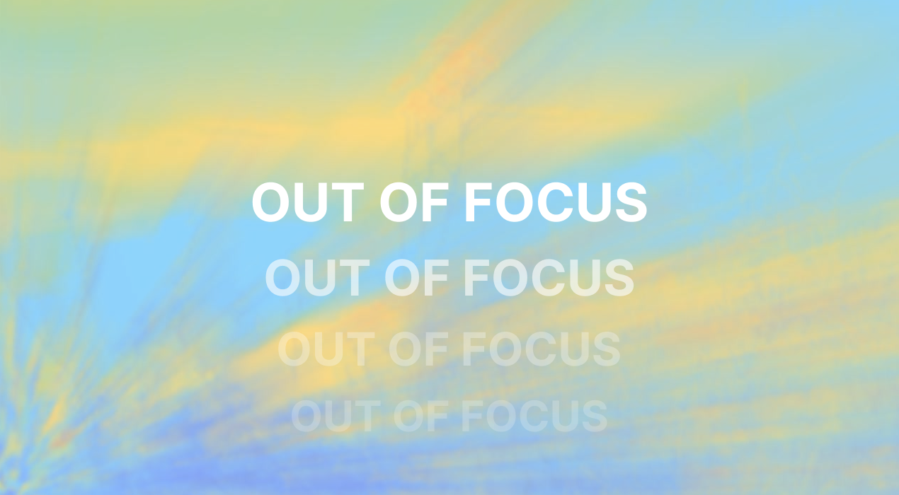
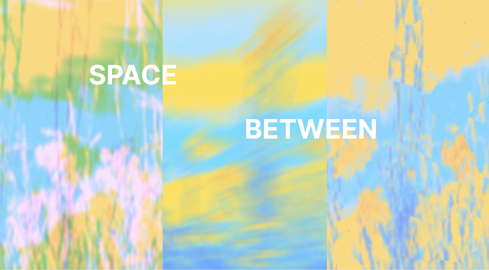

TOOLKIT: Touchdesigner, OpenWeather API, GLSL, Python, Figma
A real-time visual design system driven by live ten-day weather data. Atmospheric conditions pulled from cities around the world determine how an image is processed and presented. Temperature shifts the colour grade. Cloud cover controls visibility. Wind moves the surface. Rain fractures the image entirely. At maximum intensity, the image dissolves into signal.
Exploring what it would mean for a visual identity to genuinely respond to atmospheric conditions — not as metaphor, but as mechanism.
Custom GLSL shaders handle each visual state — gradient heatmap, chromatic aberration, liquid glass displacement, water ripples. At maximum atmospheric intensity, signal is processed through dithering. Every parameter is driven by live meteorological data, interpolated continuously across a ten-day forecast cycle. Built in TouchDesigner using the OpenWeather API.


Previous Project